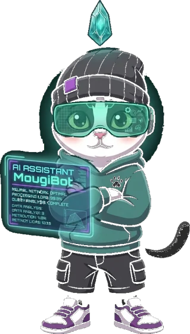
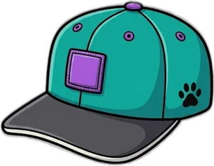
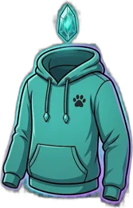
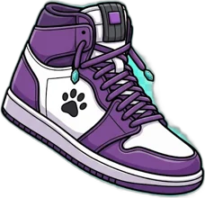
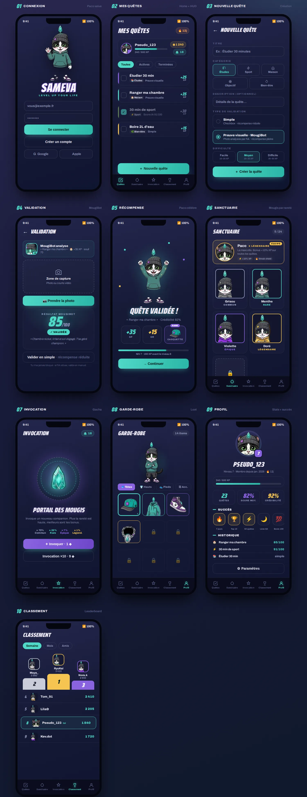

04
Visual identity
The identity rests on Paco, a tuxedo cat drawn in a clean cartoon-mascot style, and on his MougiBot variant, the face of the analysis assistant. Paco carries the brand; he is not a game unit. Playable characters and companions belong to a separate visual register, currently in design.
 PacoBrand mascot
PacoBrand mascot

MougiBotFace of the analysis assistant CelebrationReward screen
CelebrationReward screen
 WordmarkItalic, purple outline
WordmarkItalic, purple outline
Teal #4FD8C6 · signature
Purple #8A63E0 · progression
Gold #F5C451 · currency
Indigo to navy · background





Collectible items: streetwear register, constrained palette.

The final art direction, in particular the four character classes and the companion bestiary, will be commissioned from a professional illustrator after certification. The visuals shown here are production research used to scope that brief.